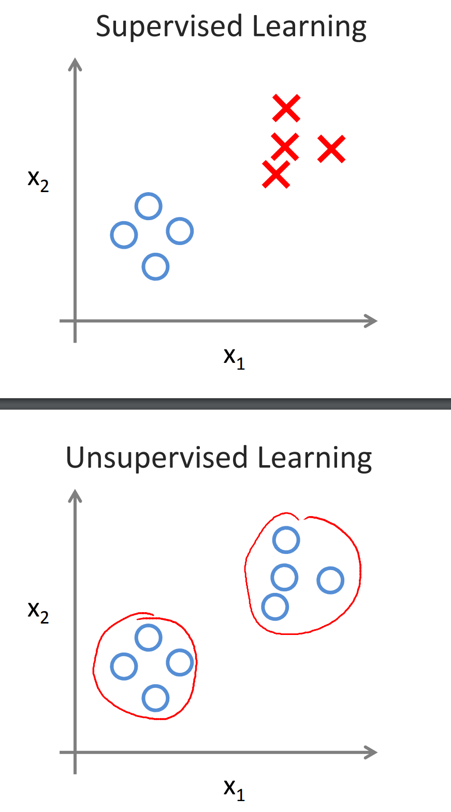
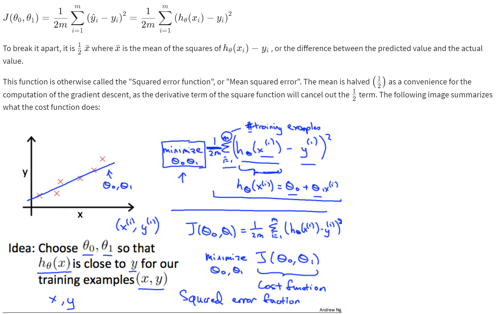

Machine Learning
Contents
Machine Learning¶
Two definitions of Machine Learning are offered. Arthur Samuel described it as: “the field of study that gives computers the ability to learn without being explicitly programmed.” This is an older, informal definition.
Tom Mitchell provides a more modern definition: “A computer program is said to learn from experience E with respect to some class of tasks T and performance measure P, if its performance at tasks in T, as measured by P, improves with experience E.”
Example: playing checkers.
E = the experience of playing many games of checkers
T = the task of playing checkers.
P = the probability that the program will win the next game.
In general, any machine learning problem can be assigned to one of two broad classifications:
Supervised learning
Unsupervised learning.
Supervised Learning¶
In supervised learning, we are given a data set and already know what our correct output should look like, having the idea that there is a relationship between the input and the output.
Supervised learning problems are categorized into “regression” and “classification” problems. In a regression problem, we are trying to predict results within a continuous output, meaning that we are trying to map input variables to some continuous function. In a classification problem, we are instead trying to predict results in a discrete output. In other words, we are trying to map input variables into discrete categories.
Example 1:
Given data about the size of houses on the real estate market, try to predict their price. Price as a function of size is a continuous output, so this is a regression problem.
We could turn this example into a classification problem by instead making our output about whether the house “sells for more or less than the asking price.” Here we are classifying the houses based on price into two discrete categories.
Example 2:
(a) Regression - Given a picture of a person, we have to predict their age on the basis of the given picture
(b) Classification - Given a patient with a tumor, we have to predict whether the tumor is malignant or benign.
Unsupervised Learning¶
Unsupervised learning allows us to approach problems with little or no idea what our results should look like. We can derive structure from data where we don’t necessarily know the effect of the variables.
We can derive this structure by clustering the data based on relationships among the variables in the data.
With unsupervised learning there is no feedback based on the prediction results.
Example:
Clustering: Take a collection of 1,000,000 different genes, and find a way to automatically group these genes into groups that are somehow similar or related by different variables, such as lifespan, location, roles, and so on.
Non-clustering: The “Cocktail Party Algorithm”, allows you to find structure in a chaotic environment. (i.e. identifying individual voices and music from a mesh of sounds at a cocktail party - Cocktail party effect).

Cost Function¶
We can measure the accuracy of our hypothesis function by using a cost function. This takes an average difference (actually a fancier version of an average) of all the results of the hypothesis with inputs from x’s and the actual output y’s.

Cost Function - Intuition 1¶
You can also create content with Jupyter Notebooks. This means that you can include code blocks and their outputs in your book.
Markdown + notebooks¶
As it is markdown, you can embed images, HTML, etc into your posts!

You can also \(add_{math}\) and
or
But make sure you $Escape $your $dollar signs $you want to keep!
MyST markdown¶
MyST markdown works in Jupyter Notebooks as well. For more information about MyST markdown, check out the MyST guide in Jupyter Book, or see the MyST markdown documentation.
Code blocks and outputs¶
Jupyter Book will also embed your code blocks and output in your book. For example, here’s some sample Matplotlib code:
from matplotlib import rcParams, cycler
import matplotlib.pyplot as plt
import numpy as np
plt.ion()
---------------------------------------------------------------------------
ModuleNotFoundError Traceback (most recent call last)
C:\Users\EMMA~1.ZHA\AppData\Local\Temp/ipykernel_3268/2191868119.py in <module>
----> 1 from matplotlib import rcParams, cycler
2 import matplotlib.pyplot as plt
3 import numpy as np
4 plt.ion()
ModuleNotFoundError: No module named 'matplotlib'
# Fixing random state for reproducibility
np.random.seed(19680801)
N = 10
data = [np.logspace(0, 1, 100) + np.random.randn(100) + ii for ii in range(N)]
data = np.array(data).T
cmap = plt.cm.coolwarm
rcParams['axes.prop_cycle'] = cycler(color=cmap(np.linspace(0, 1, N)))
from matplotlib.lines import Line2D
custom_lines = [Line2D([0], [0], color=cmap(0.), lw=4),
Line2D([0], [0], color=cmap(.5), lw=4),
Line2D([0], [0], color=cmap(1.), lw=4)]
fig, ax = plt.subplots(figsize=(10, 5))
lines = ax.plot(data)
ax.legend(custom_lines, ['Cold', 'Medium', 'Hot']);
There is a lot more that you can do with outputs (such as including interactive outputs) with your book. For more information about this, see the Jupyter Book documentation